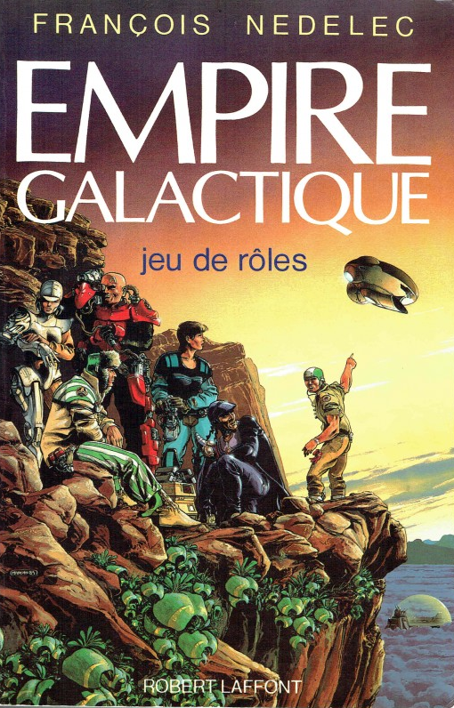

Septembre 2023
Diverses choses#
Les pouvoirs psioniques de Eldritch Wizardry de OD&D#
Voilà, la traduction et la mise en page sont terminées et le PDF est disponible depuis le 30 août là ainsi que sur itch.io.
Ce fut un gros travail, surtout que la seconde partie propose une remise en ordre des règles en mode fouillis que l'on trouve dans le manuel original.
Je comprends pourquoi un certain nombre de gens ont fait des clones à l'époque de D&D 3/3.5 sur les premières versions de D&D*. Ces versions sont simples et permettent de jouer à l'ancienne.
C'est quoi jouer Old School ?#
J'arrive 20 ans après la bataille mais j'ai remis une pièce dans le forum de DDD.
"OSR pour moi, c'est d'abord être "libre" en tant que joueur, c'est faire ce que l'on veut. Cela veut dire partir de la ville alors que le scénario doit se passer là, tuer le gentil par erreur et finir ses jours en prison après un procès en grande pompe et une séance de fouet en place publique devant la famille de celui que l'on était supposé aider, aller dans un donjon et ressortir sans avoir tué le grand Manitou parce que plus de vivres et plus de torches, etc.
C'est aussi s'amuser dans les combats avec trois fois rien de règles : faire des cascades, tenter des choses à la noix comme se battre en escaladant une statue, couper la tentacule qui vous soulève du sol (et se vautrer sur un tapis de kobolds), jeter des choses au visage des adversaires, se jeter des armes entre amis au lieu de ramasser une épée qui a glissé à l'autre bout de la pièce, se battre sur une passerelle en feu ou dans un bateau entraîné par des rapides, etc.
C'est déjouer des pièges marrants (et possiblement meurtriers), c'est aller dans des endroits qui font peur, c'est aller vite en évitant les combats parce que les monstres errants n'ont pas de trésors sur eux et ne on ne veut pas risquer de mourir pour rien, c'est avoir un objet magique qui est top et qu'on utilise tant qu'on peut dans toutes les situations saugrenues, jusqu'à ce que quelqu'un ait envie de nous le voler ou ne nous donne pas le choix que de le céder pour sortir vivants d'un mauvais pas.
C'est aussi rencontrer des PNJ très courtois mais hyper dangereux dont on ne connaît pas les pouvoirs et qui peuvent être susceptibles, c'est être obligés de faire une quête parce que le client a un moyen de pression sur vous, c'est avoir peur dans un monde de fantasy où l'on ne sait pas à qui on à faire, c'est jouer avec les circonstances dans un monde hostile et donc peu tolérant aux grosses conneries, c'est trouver des alliés, ou inventer une belle histoire que le MJ accepte d'intégrer sur le pouce de mon oncle gladiateur à la retraite qui connaissait le milieu du crime, c'est faire face à des monstres qui ont peur et qui partent en courant parce que la moitié de leur groupe a été décimée, ou qui veulent bien négocier si on leur donne la dague qui éclaire "pour donne plus facilement la tétée à mes petits chéris", c'est tomber dans un piège où il faut se marier ou s'engager 20 ans dans l'armée du Duc Morein ayant pour mission de nettoyer la plaine de Barzail de ses habitations troglodytes trolls...
Mais c'est pour moi, avant tout la liberté d'incarner un personnage sans regarder sa feuille, ses compétences, ses talents et tous ses bonus (on les connaît).
Pour un MJ, cela veut dire improvisation (et tables aléatoires), ouverture d'esprit, surfer sur les idées des joueurs, sur leurs défauts aussi, c'est se laisser baratiner (sans jet de dés), arbitrer dans le sens "on va voir si le truc loufoque que vous tentez marche", c'est connaître les règles tellement par cœur que jamais on ne regarde le manuel, c'est jouer des PNJ qui peuvent trouver trouver un intérêt à une situation, ou sont joueurs avec les joueurs, ou sont mauvais et fomentent, ou ont un côté singulier que les joueurs n'oublieront pas.
Et pour moi, c'est vraiment top quand il y a quelque chose à comprendre dans le scénario (même si les joueurs peuvent aller off-track complet et qu'ils ne comprendront peut-être jamais en ratant le maigre fil conducteur qu'ils pourront peut-être rependre dans une autre session sous une autre forme). Il faut que ce soit amusant et qu'il y ait du rythme, que les gens vivent quelque chose qui ne ressemble pas à quelque chose de trop linéaire, de trop scénarisé (genre DL). Par contre le donjon exploration doit, à mon sens, alterner avec des choses à l'air libre, des chemins, des ruines, des forêts, des villages, des montagnes, des endroits hostiles desquels on se protège partiellement via diverses protections magiques, des peuples étranges, des PNJs, des PNJs et des PNJs...
Car OSR ou pas, il faut jouer des rôles !
En PJ, la vision OSR de Matthew Finch (Swords and Wizardry) et un document bizarre sur un "gourou" en OSR donnant des leçons d'OSR (en anglais les deux mais sympas à lire)."
Un bon forum et un bon site que j'ai déjà cité plusieurs fois.
Lexique de traduction D&D#
Cela m'amène au sujet de la traduction de D&D. Trois sites francophones (que j'ai déjà cités) proposent des traductions et beaucoup de contenu :
- La Forge de Papier, manifestement en pause de puis peu, maintenant après l'énorme travail accompli ces derniers temps, on peut comprendre ;
- Le Donjon du Dragon avec énormément de contenu accessible aux membres ;
- Aide D&D dédié à D&D 5e avec en gros tout le contenu disponible librement en français (ce qui est assez énorme en fait, montrant que WotC n'est pas si méchant que ça, on voudrait bien voir ça chez une boîte de JDR française).
Le sujet de la traduction se pose car, mal traduits, les suppléments D&D peuvent devenir injouables, et on peut affirmer que pas mal de traductions sont vraiment mauvaises. J'ai eu accès au lexique D&D BECMI de DDD et il faut que j'ajoute les traductions que je propose pour Eldritch Wizardry qui n'a jamais été traduit en français.
Il faut aussi que je poursuivre mon repo git sur le sujet.
Empire Galactique#

J'ai mis la main récemment sur la première version d'Empire Galactique de 1984. On est là, typiquement, dans le jeu qui aurait pu cartonner mais deux péchés (habituels en France) ont tué le jeu :
- Après la publication de la première édition, un seul supplément est publié, un recueil de 5 scénarios, Aux frontières de l'Empire, et il faudra attendre 1987, soit plus de deux ans plus tard pour voir apparaître l'Encyclopédie Galactique, qui ne propose pas de scénarios mais détaille le background du jeu.
- Fin 1987, alors que tout le monde attendait des scénarios, le jeu sort... dans une nouvelle édition en poche avec de nouvelles règles ! Cela achèvera de tuer le jeu, car en 1988, Star Wars D6 débarque en français et reléguera Empire Galactique à l'état de souvenir.
Cette nouvelle version des règles fait apparaître des pictogrammes. Je ne sais pas ce que les autres en pensent, mais je fais une allergie complète à ce genre de présentation pour les débiles, que ce soit dans Empire Galactique, dans l'horrible Simulacres, ou même dans Star Wars FFG. Je ne sais pas d'où sort l'idée saugrenue que des pictogrammes seront plus faciles à manipuler pour les joueurs et le MJ que des mots et des nombres.
Le suivi des gammes françaises#
Le manque de suivi dans les gammes (françaises) est une maladie française dont j'ai souvent parlé en ces pages. En relisant un vieux Dragon Radieux récemment, j'ai retrouvé un article de Paul Chion qui se plaignait de la même chose.
D'un autre côté, quand il est devenu éditeur, il a été face un peu au même problème :
- Empires et Dynasties n'a eu que trois suppléments et a fait face au problème incarné par le jeu fait par un seul créateur ;
- Hurlements a été un peu plus suivi mais le thème très étroit (et un peu idéologique) au final tourné court.
Hé oui, le jeu fait tout seul par un auteur unique qui est bon dans tout, ça tourne court, souvent, sauf peut-être pour Rêve de Dragon récupéré par une communauté de fans, ou pour INS/MV.
Il a aussi fait face à la faillite, alors que d'autres ont fait face au rachat puis au changement de stratégie, par exemple Siroz devenu Idéojeux devenu Asmodée qui a racheté Jeux Descartes pour, finalement, faire autre chose que du JDR, et pour être finalement racheté par Embracer.